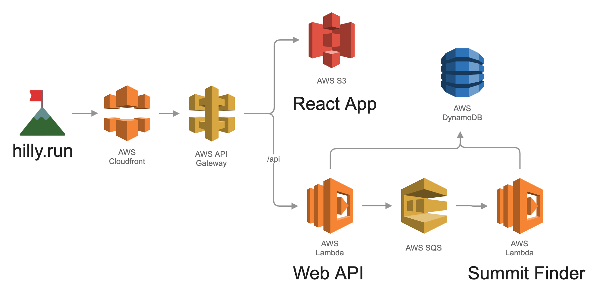
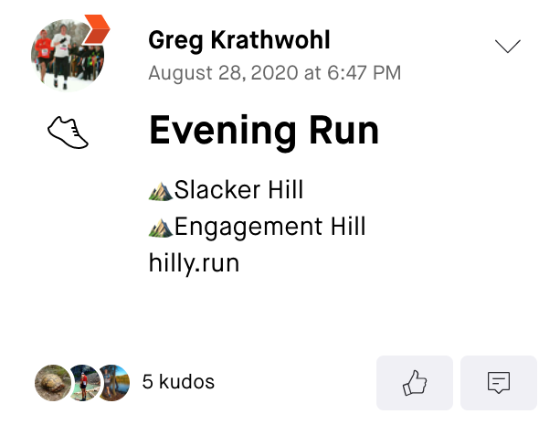

hilly.run AWS Architecture

Greg Krathwohl
Oct 3, 2020
Hilly.run is a summit logger for Strava. This post is about how I built it using AWS services including Lambda, DynamoDB, SQS, S3, API Gateway, and Cloudfront.

All requests to hilly.run first go to Cloudfront, which forwards the requests to API Gateway.
If the path starts with /api, API Gateway forwards the request to the Web API Lambda.
Otherwise, the API Gateway looks for the resource in S3. So when the user enters http://hilly.run, the request is routed to
S3, which responds with the React Javascript Application. The React app then makes additional requests to http://hilly.run/api/users,
which get routed to the Web API Lambda. Cloudfront isn't actually neccesary, but as a CDN it can improve performance.
It is also helpful for forwarding HTTP requests to HTTPS.
The main application logic is handled by Lambda Functions. One Lambda (Web API) is exposed via the API Gateway. This handles all web requests, including authentication, API requests from the frontend, and webhook calls from Strava. It communicates with DynamoDB to save a user's data after they connect with Strava, and to retreive summit data requested by the frontend. When the Web API Lambda receives a webhook from Strava about a new activity, it enqueues an SQS message that triggers the second Lambda, Summit Finder.
Summit Finder matches summits along the activity route and updates the description on Strava. The SQS message only contains the activity ID, so the Lambda first pulls the full activity route from Strava. It then queries a local SQLite database for nearby summits, and checks to see if the activity route passes over any of the summits. If it finds a matching summit, the Lambda saves that data into DynamoDB. Finally, it makes an additional call to Strava to update the activity description with the name of the summit.
That's it! This project has gone through several iterations as I've experimented with different technologies, most recently Ruby on Rails. I rebuilt it with AWS Serverless tools for stability and cost (and fun). With pay-as-you-go, I don't need to worry about fixed server costs for an unused app. If it does get more popular, Lambda functions can easily scale; the only limitation will be Strava API limits. Most importantly, I don't have to ever ssh into a server. Hopefully I can forget about this project and it'll still be running in a few years.